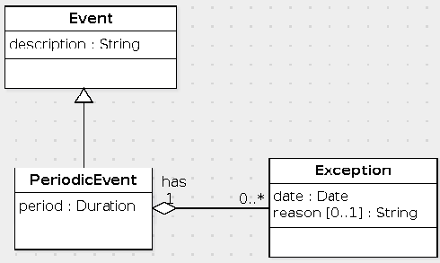
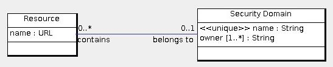

Elements in the UML diagram:

Translate this data model to SQL.
create table SecurityDomain ( id int primary key, name varchar(255) not null unique ); create table DomainOwner ( domain int, foreign key(domain) references SecurityDomain(id) on update cascade on delete cascade, owner varchar(255), primary key(domain, owner) ); create table Resource ( id int primary key, name varchar(255) not null, belongsTo int, foreign key(belongsTo) references SecurityDomain(id) on update cascade on delete set null );
create table Person ( id int primary key, name varchar(100) ); create table Instrument ( id int primary key, name varchar(100) not null unique ); create table plays ( person int, foreign key(person) references Person(id) on update cascade on delete cascade, instrument int, foreign key(instrument) references Instrument(id) on update cascade on delete cascade, primary key(person, instrument) ); create table playsSong ( person int, instrument int, foreign key(person, instrument) references plays(person, instrument) on update cascade on delete cascade, song varchar(200), primary key (person, instrument, song) );Write the following queries in SQL:
There are several variations on this query depending on the simplifications one applies. The one with all of the tables is the following:
select p.name from Person p, Instrument i, plays y, playsSong s where p.id = y.person and i.id = y.instrument and y.person = s.person and y.instrument = s.instrument and s.song = 'Quiet City' and i.name = 'trumpet'
Note that there are 4 join conditions even though there are 4 tables. The reason why there are 4 is that one of the foreign key constraints involves two columns.
If one uses the foreign key constraint of playsSong to eliminate the plays table one has this query:
select p.name from Person p, Instrument i, playsSong s where p.id = s.person and i.id = s.instrument and s.song = 'Quiet City' and i.name = 'trumpet'
select i.id
from Instrument i
where not exists (
select *
from playsSong s
where s.song = 'Moldau'
and i.id = s.instrument
)
© 2010 Ken Baclawski. All rights reserved. Redistribution and use in source and binary forms, with or without modification, are permitted provided that redistributions and uses retain this copyright notice.